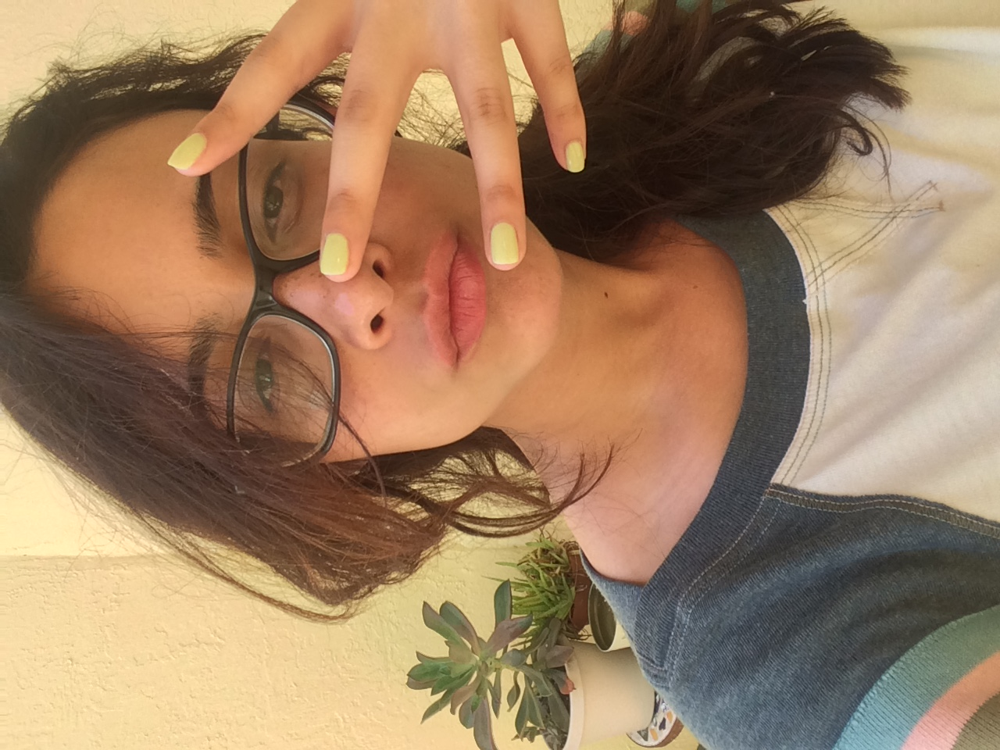

About Me

Hi! My name is Alexandra but most everyone calls me Alex. I was born and raised in Miami, land of cortaditos, beaches, and latin bakeries. I've been living in Atlanta for almost a year and a half and I've enjoyed the southern hospitality and being able to experience the different seasons. My educational background is in music (I used to play the french horn semi-professionally) but I'm now currently working as a Quality Assurance analyst at a software company.
I enjoy making music, tinkering with my 3D printer, playing video games, almost anything sci-fi, and spending time with my dog, Tchai. I'm most excited to learn how to create an app from top to bottom so that I can make my life and others' lives easier with technology.
Connect With Me